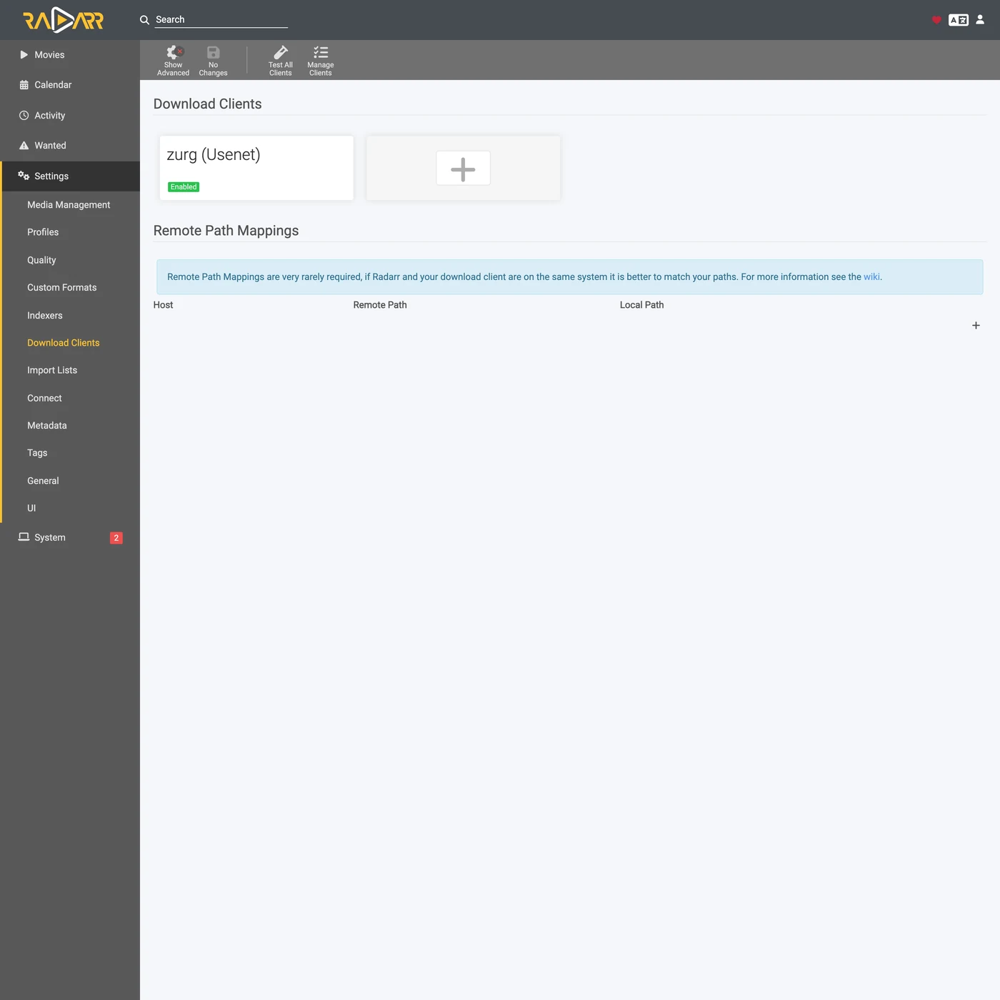
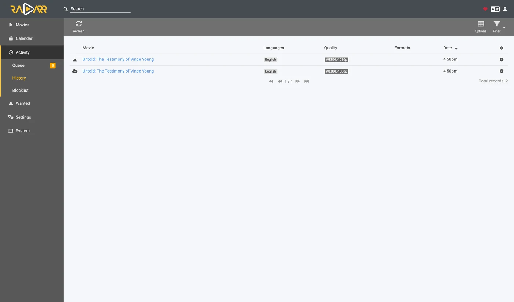

Sonarr и Radarr, шаг за шагом
Есть три способа использовать Sonarr и Radarr с zurg. Выбери, кто будет искать в zurg или в *arrs. См. как выбрать.
Первые два можно запускать одновременно. Они используют одну и ту же папку __magic__.
Укажи Sonarr и Radarr на zurg, чтобы забирать с Usenet без клиента. Во время захвата не скачивается и не распаковывается ни одно полное видео. NZB-файлы и кэши всё равно занимают место на диске. Эта страница про Usenet. Эндпоинт для торрентов использует те же клиенты и ту же папку. См. Sonarr и Radarr для торрентов.
Всё ниже записано на живой установке с zurg nightly-993-g99bcf9a4, Sonarr 4.0.19.2979 и Radarr 6.3.0.10514 и реальным аккаунтом Usenet. Имена хоста и пользователя заменены на you@zurg-server. Имена индексаторов: my-indexer. API-ключи и количество файлов в библиотеке приведены для примера. Больше ничего в снятом выводе не менялось. Строки лога torbox_nzb взяты из исходного кода zurg на 2026-11-09, а не записаны вживую.
Перед началом
Три условия должны выполняться. Проверьте все три прямо сейчас: каждое из них потом ломается так, что выглядит как что-то совсем другое.
- В zurg есть провайдер
nzbилиtorbox_nzb(TorBox Pro). Без него некому прочитать то, что пишет эндпоинт, и каждая задача получает статус Failed через 30 минут, когда zurg перестаёт ждать её появления в библиотеке. См. Usenet или TorBox: хостинг Usenet дляtorbox_nzb. magic.enabledравенtrue. Без этого не существует папки завершённых загрузок, и каждый импорт падает. См.__magic__.- Монтирование видно *arr по пути, который сообщает zurg. Если Sonarr работает в контейнере, прочитайте
шаг 8 перед любой настройкой. Если он установлен как обычное приложение на той же машине, он видит монтирование там, куда его монтирует zurg, но на каждой системе есть свой нюанс:- Linux: *arr, запущенный от другого пользователя, чем zurg, видит пустую папку, пока не включён
user_allow_other. См. настройку Linux. - macOS: запускайте его от того же пользователя, что и zurg. Монтирование находится в
/Volumes/Zurg, если вы не менялиmount_path. - Windows: запускайте Sonarr и Radarr как приложение в трее, которое предлагает их установщик, а не как службу Windows. Диск
Z:zurg принадлежит сеансу, в который вы вошли, а служба работает вне него, поэтому не видит диск. См. правила сеанса.
- Linux: *arr, запущенный от другого пользователя, чем zurg, видит пустую папку, пока не включён
Первые два проверьте прямо по конфигурационному файлу в рабочей папке zurg. В Windows откройте config.yml в Блокноте.
$ grep -A6 '^providers:' config.yml
providers:
- type: nzb
nntp:
host: news.example.com
port: 563
tls: true
username: <redacted>
password: <redacted>
$ grep -A4 '^magic:' config.yml
magic:
enabled: true
allow_delete: false
sidecar_max_mb: 32
sidecar_budget_mb: 2048allow_delete: false — безопасное значение по умолчанию, и на импорт оно не влияет: удаление внутри __magic__ лишь прячет запись, а не удаляет контент из аккаунта.
1. Включите эндпоинт
Два способа, результат один. Оба записывают в config.yml и оба требуют перезапуска: маршруты, которые отдают __magic__, и эндпоинт SABnzbd регистрируются один раз, при запуске zurg.
Вариант A — панель управления
Откройте дашборд zurg, нажмите Config и прокрутите до __magic__ & Download Clients. Включите Serve __magic__ и SABnzbd Endpoint, затем задайте SABnzbd Categories значение tv, movies.

Config — это место, где находится настройка. Magic — это место, где вы позже будете видеть поступающие запросы.

Оставьте SABnzbd Completed Directory пустым, если ваш *arr монтирует zurg в другое место, чем сам zurg, — см.
Вариант B — config.yml
Добавьте блок вручную и перезапустите zurg.
magic:
enabled: true
sabnzbd:
enabled: true
api_key: "" # empty = zurg generates one and keeps it
categories: [tv, movies]
complete_dir: "" # empty = <mount_path>/__magic__/__all__Категории — это не папки. Все они ведут в одно и то же место: папка задания — это собственная папка релиза внутри __magic__/__all__. Список нужен только для того, чтобы Sonarr и Radarr перестали предупреждать о категории, которую они не могут найти. Если категория в Sonarr — tv, то tv должна быть в этом списке.
Перезапустите zurg, затем убедитесь, что провайдер подхватился:

Для эндпоинта достаточно одной строки nzb или torbox_nzb.
2. Найдите API-ключ
Если ты оставил api_key пустым, zurg сгенерировал ключ при первом запуске и записал его в data/sabnzbd-apikey:
$ cat data/sabnzbd-apikey
0123456789abcdef0123456789abcdef
Это пример, у тебя будет другой ключ. Файл сохраняется после перезапусков, так что ключ остаётся прежним после генерации.
Если ты задал api_key сам, он лежит в config.yml, и файл с ключом не создаётся. Дашборд подскажет, в каком ты варианте, внизу блока на шаге 1. Там будет либо pinned in config.yml under sabnzbd.api_key, либо generated and kept in data/sabnzbd-apikey.
Этот эндпоинт не защищён базовой аутентификацией zurg. Ни Sonarr, ни Radarr никогда не отправляют базовую аутентификацию download client, а их HTTP-слой превращает 401 в "unable to connect" без какой-либо полезной информации. Поэтому zurg намеренно исключает /api из проверки. API-ключ — единственная защита. Относись к этому порту так же, как ко всему остальному в zurg: держи его в доверенной сети или за чем-то, что его защищает.
3. Проверьте, что он отвечает
Сделайте это до того, как трогать Sonarr. Это займёт десять секунд, и на всю остальную настройку станет понятно, где проблема: в zurg или в *arr.
$ SAB=0123456789abcdef0123456789abcdef
$ ZURG=192.168.88.245:9996
$ curl -s "http://$ZURG/api?mode=version&apikey=$SAB&output=json"
{"version":"4.5.1"}
$ curl -s "http://$ZURG/api?mode=get_config&apikey=$SAB&output=json" \
| jq '.config.misc.complete_dir, [.config.categories[].name]'
"/mnt/zurg_usenet/__magic__/__all__"
[ "*", "tv", "movies" ]В PowerShell. Введите curl.exe, а не curl: curl в Windows PowerShell — это другая команда.
PS> $SAB = "0123456789abcdef0123456789abcdef"
PS> $ZURG = "192.168.88.245:9996"
PS> curl.exe -s "http://$ZURG/api?mode=version&apikey=$SAB&output=json"
{"version":"4.5.1"}
PS> (Invoke-RestMethod "http://$ZURG/api?mode=get_config&apikey=$SAB&output=json").config.misc.complete_dir
Z:/__magic__/__all__complete_dir — это путь, который zurg будет передавать клиентам. Проверьте сейчас, что это путь, который они могут открыть.
Затем убедитесь, что неверный ключ действительно отклоняется (в Windows — curl.exe с теми же URL):
$ curl -s "http://$ZURG/api?mode=queue&apikey=wrongkey&output=json"
{"status":false,"error":"API Key Incorrect"}
$ curl -s "http://$ZURG/api?mode=queue&output=json"
{"status":false,"error":"API Key Required"}mode=version не является проверкой аутентификации. Он отвечает {"version":"4.5.1"} даже с неверным ключом. Так ведёт себя настоящий SABnzbd, и zurg это повторяет. Если вам нужно проверить именно ключ, используйте mode=queue или mode=get_config.
Работают оба варианта URL, так что в поле URL Base клиента подойдёт любой из них:
Если /api возвращает обычную 404, значит, sabnzbd.enabled всё ещё false или zurg не перезапускали после изменения этого параметра.
4. Создайте корневые папки
Создайте их до того, как добавлять, потому что диалог Add Root Folder в *arr просматривает живую файловую систему и не предложит папку, которой не существует.
$ mkdir -p /mnt/zurg_usenet/__magic__/tv /mnt/zurg_usenet/__magic__/movies
$ ls -d /mnt/zurg_usenet/__magic__/tv /mnt/zurg_usenet/__magic__/movies
/mnt/zurg_usenet/__magic__/movies
/mnt/zurg_usenet/__magic__/tvPS> New-Item -ItemType Directory -Force Z:\__magic__\tv, Z:\__magic__\moviesИли создайте обе папки в Explorer.
Замените /mnt/zurg_usenet на свой mount_path. Если он не задан, по умолчанию это /mnt/zurg на Linux, /Volumes/Zurg на macOS и Z: на Windows. Названия папок выбирайте сами; tv и movies просто соответствуют категориям.
Корневая папка должна лежать рядом с каталогом completed, а не внутри него и не над ним. zurg отдаёт клиентам __magic__/__all__, то есть вашу библиотеку, как её показывает __all__. Корневые папки располагаются рядом с ней, в __magic__/tv и __magic__/movies. Не __magic__/__all__, не сам __magic__ и не /mnt/zurg_usenet. Оба клиента выдают health check, если корневая папка является выходной папкой download-клиента, а Radarr также выдаёт его, если корневая папка содержит эту папку. Соседние папки не вызывают ни того, ни другого, а ручной импорт, направленный на каталог completed, тогда видит один релиз, а не всю библиотеку.
Вот как выглядит ошибка. Оба скриншота настоящие, из двух клиентов. Они сделаны до того, как каталог completed переехал в __magic__/__all__, поэтому пути на них на один уровень выше ваших, но правила те же самые:

Sonarr с добавленным самим каталогом completed как корневой папкой. Он предупреждает, потому что корневая папка является выходной папкой.

Radarr с добавленной /mnt/zurg_usenet. Он предупреждает и о родительской папке, чего Sonarr не делает. Переместите корневую папку рядом с каталогом completed, и оба предупреждения исчезнут.
5. Добавьте клиент в Sonarr
Новый Sonarr блокирует всё за экраном первого запуска. Выберите Forms (Login Page), задайте имя пользователя и пароль и нажмите Save.

Дальше вы не пройдёте, пока Authentication Method не будет установлен в значение, отличное от None.

После Save вас один раз выбросит из сессии, и вы окажетесь на странице входа.

Settings → Download Clients
Перейдите в Settings → Download Clients. На чистой установке здесь есть только карточка +.

Нажмите + под "Download Clients", а не тот, что ниже, под "Remote Path Mappings".
Выберите SABnzbd в колонке Usenet.

zurg притворяется именно SABnzbd, поэтому ничего другого из этого списка работать не будет.
Диалог откроется с настройками SABnzbd по умолчанию: localhost, порт 8080, без ключа.

Что вписать в каждое поле

Показанный API-ключ приведён для примера, вставьте свой.
В Docker и "localhost", и имя хоста работают неправильно. Внутри контейнера localhost — это сам контейнер, а имя хоста машины обычно резолвится в 127.0.1.1, то есть тоже в контейнер. Используйте LAN- или Tailscale-IP хоста, никогда не localhost и не голое имя хоста, даже если они работают в вашей оболочке.
Нажмите Test. Зелёная галочка означает, что все четыре проверки клиента прошли: версия, API-ключ, глобальная конфигурация и категория.

Теперь нажмите Save.

6. Добавьте корневую папку в Sonarr
Откройте Settings → Media Management и прокрутите страницу вниз.

Нажмите Add Root Folder. Откроется файловый браузер по файловой системе Sonarr. В Docker это файловая система контейнера.

Введите путь в поле вверху. Если монтирование действительно видно Sonarr, то при вводе появится содержимое __magic__: __all__ со всеми релизами и всё, что вы создали рядом с ним. Это самый быстрый способ убедиться, что bind mount настроен правильно.

Если папка пустая или выдаёт ошибку, остановитесь и исправьте монтирование, прежде чем идти дальше.

Допишите путь до __magic__/tv (Z:\__magic__\tv в Windows) и нажмите Ok.

Если в Free Space отображается правдоподобное число, значит Sonarr может получить информацию о монтировании. Unmapped Folders показывает количество релизов, которые уже лежат в этой папке.
7. Сделайте то же самое в Radarr
Такая же настройка, но с двумя изменёнными значениями: категория — movies, а корневая папка — __magic__/movies.

Первый запуск Radarr делается так же: сначала включите Forms auth, затем войдите.

Settings → Download Clients → +, затем SABnzbd в разделе Usenet.

Хост, порт и ключ те же. Отличается только Category — movies, а не tv.

Test, зелёная галочка, Save.

Затем Settings → Media Management → Root Folders → Add Root Folder и добавьте /mnt/zurg_usenet/__magic__/movies.
Один zurg, два клиента, одна очередь. Очередь и история zurg фильтруются только по категории, и больше ничему. Если два Sonarr используют tv, они будут видеть задачи друг друга; Sonarr с tv и Radarr с movies — не будут. Держите один клиент на каждую категорию, и эта проблема не возникнет.
8. Если ваш *arr работает в Docker
Этот шаг для Docker на Linux-хосте. Docker Desktop на macOS и Windows запускает контейнеры внутри виртуальной машины. Привязка rslave ниже опирается на распространение монтирования в Linux (см. Docker setup), а передача монтирования zurg контейнеру на этих системах не тестировалась. На macOS и Windows установите Sonarr и Radarr как обычные приложения, как описано в
Три отдельные проблемы. Вторая стоит загрузки при каждом импорте. Третья проявляется только при первом перезапуске zurg.
Путь, который сообщает zurg, должен быть путём, который клиент может открыть
Если контейнер монтирует библиотеку в другое место, чем zurg, каждый импорт будет падать с download doesn't contain intermediate path или с ошибкой проверки remote-path. Исправить можно любым из двух способов, оба подходят:
- Задайте
sabnzbd.complete_dirкак путь, который видит клиент. Это проще всего, когда клиент один или несколько клиентов монтируют библиотеку в одно и то же место. - Добавьте remote path mapping в *arr. Используйте это, когда разные клиенты монтируют её по-разному.
sabnzbd:
complete_dir: "/data/zurg/__magic__/__all__" # what the *arr sees, not what zurg seesДля второго способа откройте Settings → Download Clients и нажмите + под Remote Path Mappings — то есть нижний, а не тот, что вы использовали в шаге 5.

Host должен точно совпадать с строкой хоста, которую вы ввели в download client. Remote Path — это то, что сообщает zurg; Local Path — это место, где его видит клиент.
Один volume для папки загрузок и корневых папок
__magic__/__all__ → __magic__/tv переносится бесплатно, потому что это переименование. Переименование работает только внутри одного монтирования. Если отдать контейнеру две папки как два volume, он увидит две файловые системы. Обе лежат поверх монтирования zurg, но это всё равно не помогает.
volumes: # do not do this
- /mnt/zurg_usenet/__magic__/__all__:/downloads
- /mnt/zurg_usenet/__magic__/tv:/tvЯдро внутри контейнера отказывает в переименовании. Sonarr и Radarr тогда молча копируют файл и удаляют оригинал. Каждый импорт качает весь релиз из твоего аккаунта и пишет его на диск zurg. Импорт при этом проходит успешно, просто медленно. Один эпизод на 1.46 GB занял 50 секунд и 2.9 GB трафика. С одним volume это заняло одну секунду и ничего не читало.
Отдай контейнеру один volume, в котором лежит всё монтирование zurg. Через него доступны папка загрузок и корневые папки. Bind из следующего раздела делает именно это. Удалённое сопоставление путей или complete_dir потом указывает клиенту на __all__ внутри того же volume.
Ручной импорт с Hardlink/Copy Files тоже копирует. Выбери Move Files.
Монтируйте родителя точки монтирования, а не саму точку
Перезапуск zurg размонтирует /mnt/zurg_usenet и монтирует его заново. Контейнер, который примонтировал сам точку монтирования, сохраняет fuse-соединение, с которым был запущен, и оно теперь мёртвое. Каждое чтение тогда отвечает Socket not connected, а так как оба клиента перед захватом проверяют свободное место в корневой папке, каждый релиз молча отклоняется:
FreeSpaceSpecification: Socket not connectedНи один из клиентов не говорит, что маунт устарел. Папка внутри контейнера по-прежнему видна, а ручной захват, отправленный прямо клиенту, всё ещё работает. Выглядит это так, будто *arr тихо перестал искать.
Примонтируй родительскую папку с rslave, и новое монтирование придёт как событие подмонтирования, которое контейнер подхватит:
volumes:
- type: bind
source: /mnt # the parent, not /mnt/zurg_usenet
target: /mnt
bind:
propagation: rslaveПроверяй контейнер после любого перезапуска zurg. Нужен размер, а не ошибка:
$ docker exec radarr df -h /mnt/zurg_usenet
Filesystem Size Used Avail Use% Mounted on
zurg{PGSq4}: 1.0P 0 1.0P 0% /mnt/zurg_usenetПетабайт означает, что zurg показывает виртуальную файловую систему, а не диск. Так и должно быть, и именно это проходит проверку свободного места у *arr.
9. Проследите один grab от начала до конца
I don't see any text below your message to translate. Please paste the page or doc you want translated into Russian, and I'll keep the structure exactly as it is.
Grab it
Откройте фильм (или эпизод), нажмите Interactive Search и выберите релиз.

Столбец Source показывает nzb — это протокол, который zurg умеет принимать.
Нажмите кнопку со стрелкой в круге в конце строки, чтобы отправить релиз в загрузку. Если релиз не совпадает чисто, клиент сначала попросит подтвердить сопоставление:

Override and Grab появляется, когда клиент хочет, чтобы вы подтвердили, что это за релиз. Проверьте сопоставление и нажмите Grab Release. При обычной автоматической отправке это окно никогда не показывается.
Он попадает в очередь

Activity → Queue сразу после захвата. Обратите внимание на полосу прогресса: она заполнена, а в Time Left стоит прочерк. Загружать тут нечего, поэтому задание либо в очереди, либо уже выполнено, и промежуточного состояния нет. Остальные строки здесь относятся ко второму Radarr, который смотрит на тот же zurg и ту же категорию — см. примечание в шаге 7.
zurg записывает NZB и читает его
Aug 25 14:44:03 zurg-server zurg[3034965]: INFO nzb Loaded NZB
Last.Week.Tonight.with.John.Oliver.S13E22.480p.WEB.x264-RMTeam.nzb: 4 files
Aug 25 14:50:28 zurg-server zurg[3034965]: INFO nzb Loaded NZB
Untold.The.Testimony.of.Vince.Young.2026.1080p.NF.WEB-DL.DD+5.1.Atmos.H.264-playWEB.nzb: 9 filesLoaded NZB … : N files — это строка, которая говорит, что NZB распарсился. Если задача помечена как Failed через 30 минут, когда zurg перестаёт ждать её появления в библиотеке, то именно этой строки и не хватает.
Происходит импорт

Activity → History. Два события с разницей в несколько секунд: Grabbed, затем Movie Imported.

Status: Downloaded, Size 4.7 GiB, а ничего на самом деле не скачивалось.
Убедитесь, что файл настоящий
Импорт переместил файл в корневую папку. Прочитай оба его конца и спроси у ffprobe, что это за файл:
Если твоя оболочка не находит ffprobe, используй ~/zurg/bin/ffprobe: установка кладёт туда свою копию, если ни один ffprobe не был установлен раньше.
$ ls -la "/mnt/zurg_usenet/__magic__/movies/Untold - The Testimony of Vince Young (2026)/"
-rw-r--r-- 1 you you 4920958828 Aug 25 14:53 Untold.The.Testimony…playWEB.mkv
$ dd if="$F" bs=1M count=1 >/dev/null
1048576 bytes (1.0 MB, 1.0 MiB) copied, 0.0429446 s, 24.4 MB/s
$ ffprobe -v error -show_entries format=duration,size,format_name \
-of default=noprint_wrappers=1 "$F"
format_name=matroska,webm
duration=4709.440000
size=4920958828В PowerShell, из папки zurg. Установка положила bin\ffprobe.exe, если только ffprobe не был уже в твоём PATH. В этом случае введи ffprobe:
PS> $F = Get-Item "Z:\__magic__\movies\Untold - The Testimony of Vince Young (2026)\*.mkv"
PS> $F.Length
4920958828
PS> bin\ffprobe.exe -v error -show_entries format=duration,size,format_name -of default=noprint_wrappers=1 $F.FullName
format_name=matroska,webm
duration=4709.440000
size=4920958828Это 78-минутный Matroska, который стримится из статей Usenet по требованию. Байты приходят, когда что-то их читает, а не когда *arr импортирует файл.
10. Добавление релиза вручную
$ SAB=0123456789abcdef0123456789abcdef
$ ZURG=192.168.88.245:9996
# an NZB file you already have (the upload field is called name, as in SABnzbd)
$ curl -s "http://$ZURG/api?mode=addfile&apikey=$SAB&cat=movies" \
-F 'name=@Movie.Title.2024.1080p.WEB-DL.nzb'
{"status":true,"nzo_ids":["SABnzbd_nzo_…"]}
# or a link to one, which zurg downloads itself
$ curl -s -G "http://$ZURG/api" \
--data-urlencode mode=addurl --data-urlencode "apikey=$SAB" --data-urlencode cat=movies \
--data-urlencode 'name=https://indexer.example/getnzb/<id>?r=<indexer-key>' \
--data-urlencode nzbname=Movie.Title.2024.1080p.WEB-DL
{"status":true,"nzo_ids":["SABnzbd_nzo_…"]}В PowerShell, с curl.exe, а не curl. Каждая команда отвечает {"status":true,"nzo_ids":[…]}, как показано выше.
$SAB = "0123456789abcdef0123456789abcdef"
$ZURG = "192.168.88.245:9996"
# an NZB file you already have (the upload field is called name, as in SABnzbd)
curl.exe -s "http://$ZURG/api?mode=addfile&apikey=$SAB&cat=movies" -F "name=@Movie.Title.2024.1080p.WEB-DL.nzb"
# or a link to one, which zurg downloads itself
curl.exe -s -G "http://$ZURG/api" `
--data-urlencode mode=addurl --data-urlencode "apikey=$SAB" --data-urlencode cat=movies `
--data-urlencode "name=https://indexer.example/getnzb/<id>?r=<indexer-key>" `
--data-urlencode nzbname=Movie.Title.2024.1080p.WEB-DL--data-urlencode сохраняет собственные ? и & ссылки внутри name. Задание появится в очереди приложения при следующей проверке, в течение минуты.
Дальше всё определяют пять вещей.
- Фильм или сериал уже должен быть в этом приложении. Оно импортирует только то, что может сопоставить с чем-то из своей библиотеки.
- Имя должно говорить, что это за релиз. Задание берёт имя файла NZB или
nzbname, если вы его передали. Безnzbnameaddurlиспользует имя файла, которое отдаёт индексатор. Укажите в имени год. - Категория выбирает приложение.
cat=moviesпопадает в тот Radarr, чей клиент загрузки используетmovies. Каждое приложение смотрит только на свою категорию. - Профиль качества не блокирует импорт. Блокировать может уже имеющийся файл. При импорте Radarr не проверяет ни разрешённые качества, ни минимальную оценку пользовательского формата. Он импортировал 720p BluRay с оценкой 0 в профиль, который разрешает только 2160p и требует оценку 100. Он также импортировал 1080p WEBRip в фильм, чей профиль разрешает только 720p. Затем он заменил его 1080p BluRay как обновлением и удалил WEBRip. WEB-DL, добавленный после этого, остановился в Activity с сообщением Not an upgrade for existing movie file. Activity → Queue → Manual Import всё равно импортирует его и заменит файл.
- Ошибки придётся убирать самому. Приложение никогда не блокирует и не удаляет загрузку, которую не взяло само. Релиз, чьи статьи устарели на новостных серверах, вернулся из zurg со статусом Failed и остался в очереди Radarr с сообщением Download has failed wasn't grabbed by Radarr, skipping automatic download handling. Уберите его из очереди и выберите другой релиз.
Проверено 2026-10-10 на Radarr 6.3 с использованием addfile и addurl, включая профиль, который требует пользовательский формат, построенный по имени релиза. Каждый импорт был переименованием в __magic__/movies, ничего не копировалось. Sonarr не тестировался.
Спасибо .telmen из Discord за вопрос о том, как это сделать с Usenet.
Наблюдение со стороны zurg
Страница /magic/ в zurg показывает каждый NZB, который когда-либо был передан эндпоинту. Sonarr и Radarr удаляют задания, которые они забрали, но запись хранится ещё неделю, чтобы опрос, пересекающийся с удалением, отвечал одинаково дважды. Задание со статусом Failed или Stuck (в очереди больше часа), которое никакой клиент уже не удалит, например после того как ты перестал использовать zurg как клиент загрузки, можно очистить, удерживая кнопку Clear. При очистке удаляется его NZB, если только импорт ещё его не использует.

Placements — это файлы, которые клиенты переместили; tombstones — это папки заданий, которые они потом удалили. Если клиент копирует вместо перемещения, страница показывает красную таблицу Imports that were copies. zurg превращает эти копии обратно в placements и удаляет их, но каждая из них всё равно была полной загрузкой, так что поправь тома.

State — это вся картина. Queued значит, что zurg ещё не закончил с релизом: библиотека его не показала, размеры файлов не устаканились или статьи не проверены. Completed значит, что он готов к импорту. Release — это папка, из которой клиент импортирует.
Столбец Release читается из библиотеки при каждом опросе, а не хранится. Переименуй релиз в панели zurg, дай repair пересобрать его или позволь zurg добавить суффикс, если два релиза называются одинаково, — задание всё равно будет следовать за ним.
Что работает, а что нет
Работает:
- Тест подключения, все четыре проверки, в обоих клиентах.
- Захват (grab), очередь, история, импорт через переименование и очистка после импорта.
- Повторный захват того же релиза. Каждый последующий захват получает собственный job id, поэтому клиент работает с ним, а не переиспользует результат старой задачи. Релиз под капотом остаётся тем же. Повторный захват релиза, который предыдущий импорт уже опустошил, сообщается как Failed. В его папке в
__magic__/__all__больше нечего импортировать, и Failed заставляет клиент занести его в чёрный список и взять другой. Захват, который опустошил папку, продолжает сообщать Completed, пока клиент его не удалит. - Удаление задачи из очереди, с удалением NZB или без него.
mode=addurlдля человека или автоматизации, которые передают URL вместо загрузки файла. Ни один из *arr его не использует.
Не работает:
- Нет прогресса. Задача либо в очереди, либо завершена. Процентов между ними нет, потому что нечего измерять: загрузки не происходит. Очередь показывает заявленный размер NZB, чтобы строка не была пустой.
- Нет паузы, возобновления, ограничения скорости, приоритетов и скриптов постобработки. У SABnzbd всё это есть, но zurg применять это не к чему.
del_filesпри удалении завершённой задачи из истории игнорируется. (Для задачи Failed он удаляет NZB, если из него ничего не импортировано.) Клиент подразумевает «папка задачи снова твоя», но файл, который он только что импортировал, всё ещё отдаётся из этого NZB. Папка, которую он хотел удалить, уже удалена: он сам удалил её через монтирование.- Basic auth не может защитить этот эндпоинт. Единственная защита — API-ключ.
Сигнал об ошибке. Релиз, в котором нет ничего пригодного для импорта, сообщается как Failed, и оба клиента заносят его в чёрный список и берут альтернативу. Сюда относятся: релиз, все файлы которого повреждены, удалены или отфильтрованы; релиз, состоящий только из .par2, .sfv и сопутствующих файлов; релиз, где все файлы имеют формат, который ничего не воспроизводит (так выглядит обфусцированный пост, у которого RAR-набор назван .z001….z133); и архив, который уже открыт и в котором не найдено медиа. RAR-набор — это содержимое, а не вспомогательные файлы: zurg стримит видео прямо из него. Если в релизе действительно есть что-то, для чего у zurg нет расширения, расширьте addl_playable_extensions, а не добавляйте релиз в чёрный список.
Статьи проверяются до того, как задача будет объявлена завершённой. zurg ждёт, пока библиотека покажет релиз и размеры его файлов перестанут меняться. Затем он спрашивает новостные серверы о начале и конце каждого файла с содержимым, то есть о первых шестнадцати статьях и последней. Также он скачивает первую статью каждого файла. Это до шестидесяти четырёх статей плюс несколько дополнительных для релиза с небольшим количеством файлов. Некоторые новостные серверы всё ещё говорят, что статья существует, после того как её содержимое удалили, и это видно только при загрузке. Скачанная статья также показывает, что она принадлежит именно этому посту, а не другой загрузке. Задача остаётся Queued, пока это не будет выяснено. Повреждения, которые выборка не затрагивает, здесь не обнаруживаются: они всплывут при чтении, которое до них дойдёт. Релиз, у которого статьи пропали, сначала проходит восстановление PAR2, и после восстановления проверяется снова. Если он снова цел, работа продолжается. Если статьи всё ещё отсутствуют или восстановить их нечем, задача сообщается как Failed с количеством отсутствующих статей. Это ошибка загрузки, именно на неё реагируют клиенты: они без участия пользователя заносят такой релиз в чёрный список и берут альтернативу, вместо импорта того, что не будет воспроизводиться. При torbox_nzb новостных серверов и проверок статей нет: захват проверяется по тому, скачал ли его TorBox.
Проверка, которая не может завершиться, не ждёт вечно. Иногда проверка вообще не может завершиться: пул соединений может быть недоступен, аккаунт может быть ограничен по скорости, или истечёт таймаут. Это не ответ. Задача остаётся Queued, и проверка повторяется через минуту. zurg считает попытки для каждой задачи, чтобы перезапуск их не сбрасывал. После тридцати неудачных попыток подряд, охватывающих не менее трёх часов, задача переходит в историю со статусом Failed. Сообщение содержит количество попыток, временной промежуток и последнюю ошибку. Волна откровенных отказов доходит до тридцати за час и не блокирует очередь из-за этого.
Релиз, который исчезает из библиотеки, проваливает свою задачу. Релиз могут удалить из дашборда, убрать его NZB из каталога наблюдения или отбросить все аккаунты. Задача остаётся Queued пятнадцать минут, а затем переходит в историю со статусом Failed. Клиент заносит его в чёрный список и берёт другой. Ожидание нужно для перезапусков: библиотека скрывает все релизы во время загрузки, и это не должно восприниматься как удаление. В первые пятнадцать минут после запуска zurg ни одна задача по этой причине не падает. Задача, релиз которой библиотека ещё ни разу не показала, не затрагивается, потому что он ещё поступает.
Устранение неполадок
Всё ещё застряли? Задайте вопрос в форуме zurg-support на Discord. В разделе о получении помощи описано, что нужно указать.
Где хранится состояние
Вот таблица на русском, с сохранённой структурой и кодом.